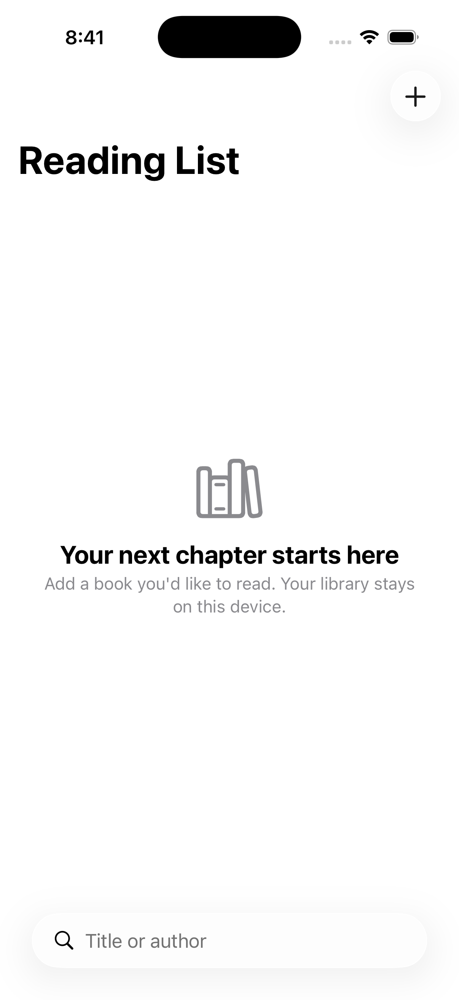

Before asking an agent to fix Swift, establish that your Mac can build and run an app without an agent. This gives you a baseline for separating installation, project and implementation problems.
Create a small baseline
In Xcode, start a new iOS app project using the SwiftUI interface option available in your installed version. Choose a local folder and a neutral project name such as FirstRun. Select an available iPhone simulator as the destination, then use Product → Run. Exact template controls can change between Xcode versions; follow the options shown by your installed toolchain.
Apple's simulator instructions describe selecting a simulated run destination. The important result is an app window that responds, not merely a successful project-creation dialog.
- 1Create or open project
- 2Select simulator
- 3Build → install → launch
- 4Change text and repeat
Keep a command-line baseline too
For an existing checkout, list the schemes before choosing a build command:
xcodebuild -list -project YourApp.xcodeproj
Replace the project name with the actual file. Do not run a copied command against a guessed scheme. Once you know the scheme, a simulator build can separate compilation from device signing:
xcodebuild -project YourApp.xcodeproj \
-scheme YourScheme -sdk iphonesimulator \
-derivedDataPath /tmp/first-run-build \
CODE_SIGNING_ALLOWED=NO build
This command builds; it does not install or launch. A successful build therefore does not complete the entire exercise. Return to Xcode to run on your selected simulator and inspect the screen.
Diagnose the first meaningful failure
| Symptom | Check first | Avoid |
|---|---|---|
| Developer tools cannot be found | Selected Xcode and first-launch setup | Asking the agent to rewrite Swift |
| Requested destination is unavailable | Installed runtime and available devices | Repeatedly using an obsolete device identifier |
| Scheme cannot be found | Project/workspace and scheme list | Guessing the scheme from the folder name |
A long build log may contain many consequences of one error. Read the first relevant failure in its target context. Keep the command, selected SDK and a short redacted diagnostic together when asking for help.
Change one visible thing
After the baseline runs, change the initial text, rebuild and confirm the visible change. This establishes that you are editing the project you launched. Save a version-control checkpoint before introducing an agent. If later changes fail, you now have a known starting point to compare against.
Verification boundary
The command-line preparation for this lesson used the repository's existing Reading List project with Xcode 26.6, rather than a newly created Xcode GUI template. Its build result is recorded separately in the series evidence. The new-project GUI walkthrough above is instructional guidance, not a claim that a fresh installation and template flow were recorded end to end. Do not treat it as the completed Level 1 agent tutorial.
Recorded baseline result
The existing Reading List sample built successfully, installed and launched on an iOS 26.5 simulator. The first screenshot was captured before the app appeared and showed the home screen; a second capture showed the app's empty state. This is why a successful launch command alone is not visual verification.

Read the baseline evidence record. Persistence, search behavior and accessibility were not retested in this baseline run.
Related reading
- Five checks for an AI-built SwiftUI app
Use persistence, search and accessible states to make “it works” a testable claim.
What to do next
Next: How coding agents read a project: AGENTS.md, CLAUDE.md, GEMINI.md, and what to put in them